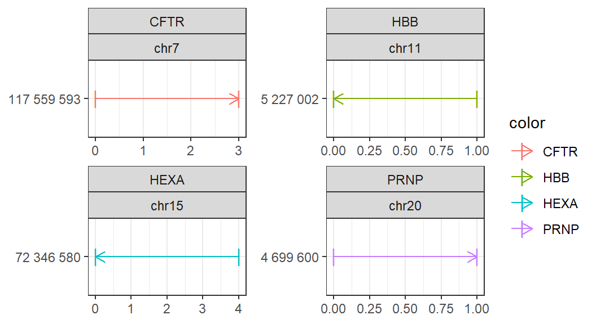
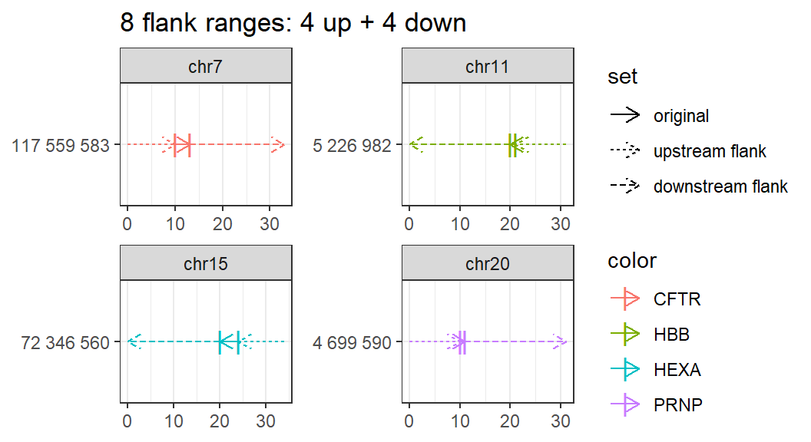

genome_arithmetics.RmdThis vignette discusses multicrispr’s genome arithmetics functionality, often required in the first step of Crispr/Cas9 design. Multicrispr’s genome arithmetics functions allow two-way transformations around a genomic range’s start/end. The GenomicRanges and plyranges packages also offer an extensive genome arithmetics functionality, though with functions designed as one-way transformations.
We illustrate the different operations on a small GRanges with four prime editing targets in Anazlone et al. (2019)
require(multicrispr) ## Lade nötiges Paket: multicrispr bsgenome <- BSgenome.Hsapiens.UCSC.hg38::BSgenome.Hsapiens.UCSC.hg38 gr <- char_to_granges(c(PRNP = 'chr20:4699600:+', # snp HBB = 'chr11:5227002:-', # snp HEXA = 'chr15:72346580-72346583:-', # del CFTR = 'chr7:117559593-117559595:+'),# ins bsgenome = bsgenome) plot_intervals(gr, facet_var = c('targetname','seqnames'))

dbl <- double_flank(gr, -10, -1, +1, +20, plot = TRUE) ## 8 flank ranges: 4 up + 4 down

Anzalone, A.V., Randolph, P.B., Davis, J.R. et al. Search-and-replace genome editing without double-strand breaks or donor DNA. Nature 576, 149–157 (2019). https://doi.org/10.1038/s41586-019-1711-4